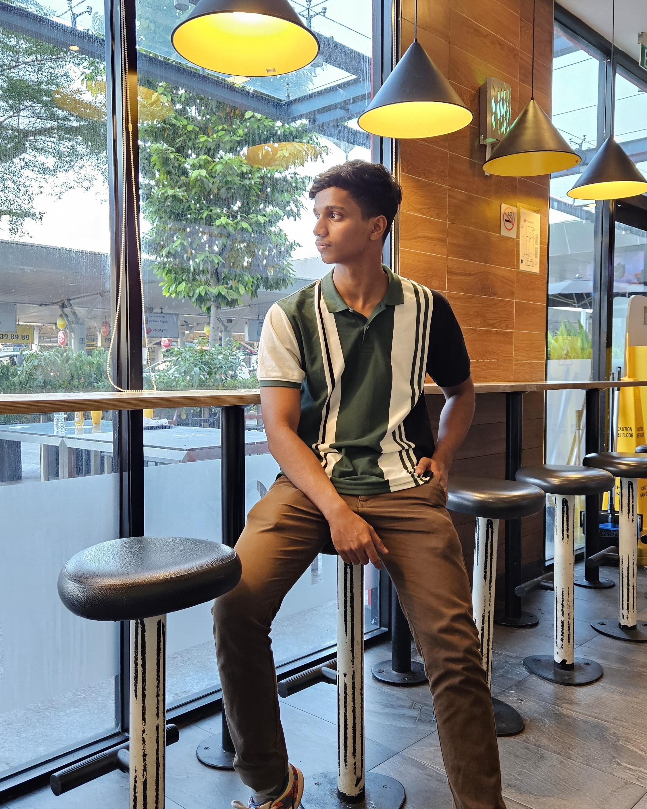

👋 Hi there, I'm Akbar

Started from my high school, curious about games and computers, I've tried everything found interesting to me until I realized that web development is my favourite ⭐.
I was doing freelance web designing and development ⌨️ (mostly static websites) during my high school, to buy my first personal computer 🖥️ and accessories. Yes, I've learnt web development with my old smartphone 📱 and eventually my friend helped me with his computer to deliver my freelance gigs.
Game development 🎮 was the main attraction for me to get into technologies and still I'm trying out things and making games as a hobby (I must say, I'm not an expert).
Useful links :
New tech stacks and tools always drive me curious. I try to learn and test new technologies pop up in the market. Here are my favourites :
Writing stories and poems (also reading) was my hobbies since my childhood in which I still think I had a knack (I'm not saying this out of self confidence, I still regret that I became a software engineer instead of a world famous author).
Somewhere in the period of building my career, I lost my skills on writing and now, trying to redevelop that, reading a lot and imagining a lot (I won't spend valuable time looking at the ceiling).
I write blog posts nowadays, mostly technical things: challenges faced in development, new features or tools I discovered, new tools or solutions I built, and so on.
Here are some recent posts :
Got my first offer letter at the final year of my high school, while I was preparing for my exams. I was so much excited about the industry and realized that it was the best opportunity to start exploring.
Signed that offer letter after my exams and I was ready to go. Almost everyone from my family and friends were concerned about me choosing a job over higher education, but I had already figured out my future.
Studying Bachelor of Computer Application at Manipal University along with my job now, which is almost manageable by a 21 year old. Here is my career roadmap :
Web developer • Freelance
March 2018 - March 2022React, Django, Next JS
Shopify developer • Final Apps
April 2022 - December 2025React, Nest JS, Remix
Product engineer • Accurate Saudi
December 2025 - NowERP, Odoo, AWS
Designing and developing static websites was the primary gigs I could handle when I started freelancing web development. One of my friends' brother had an ERP development company and they out-sourced web development projects, of which I ended up the main contender.
Eventually, I got a project from a start-up which was a web app with almost 3K+ users, I could complete it in a few months which is running flawlessly until now. Still building projects to solve problems of my own or faced by others.
Listing out some of my popular projects :
Game development was the whole reason I touched a computer in the first place. Somewhere in the career it quietly turned into a hobby I keep crawling back to. I just like building small things that are annoyingly hard to put down.
These are one-file games. No engine, no build, nothing to install (I can barely install things myself). Open the page and play. Both are secretly about the same thing: greed, and the exact second it stops being worth it.
Go on, beat my high score , then tell me you stopped at the right moment:
Handcrafted by
Akbar Ali
with
tailwind css
. Inspired from
leerob.io
.
Last updated - July 2026